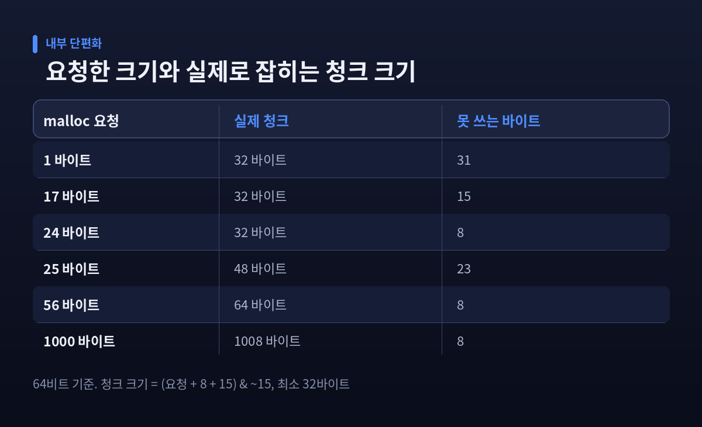
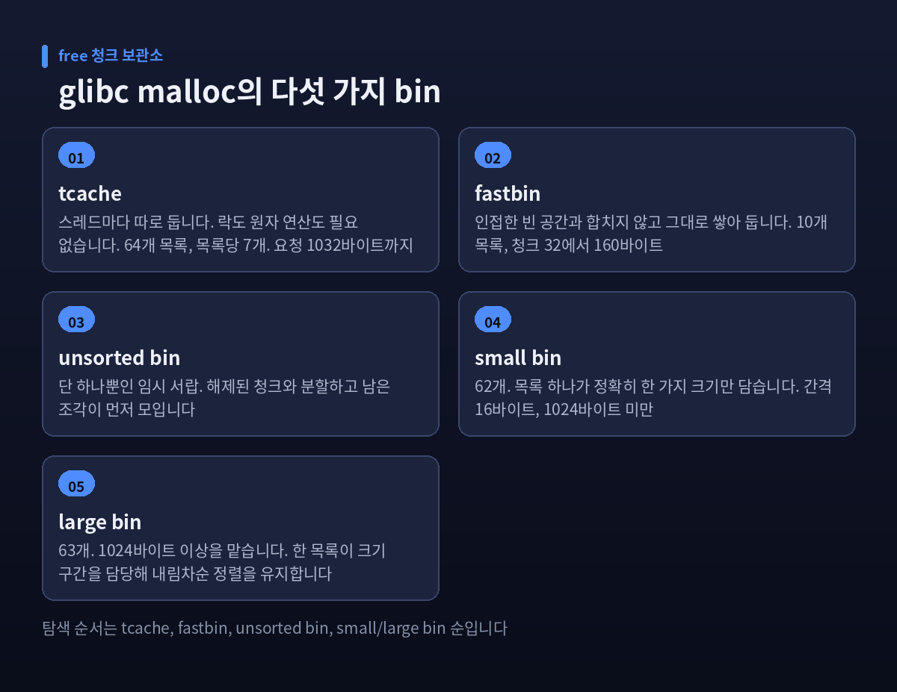
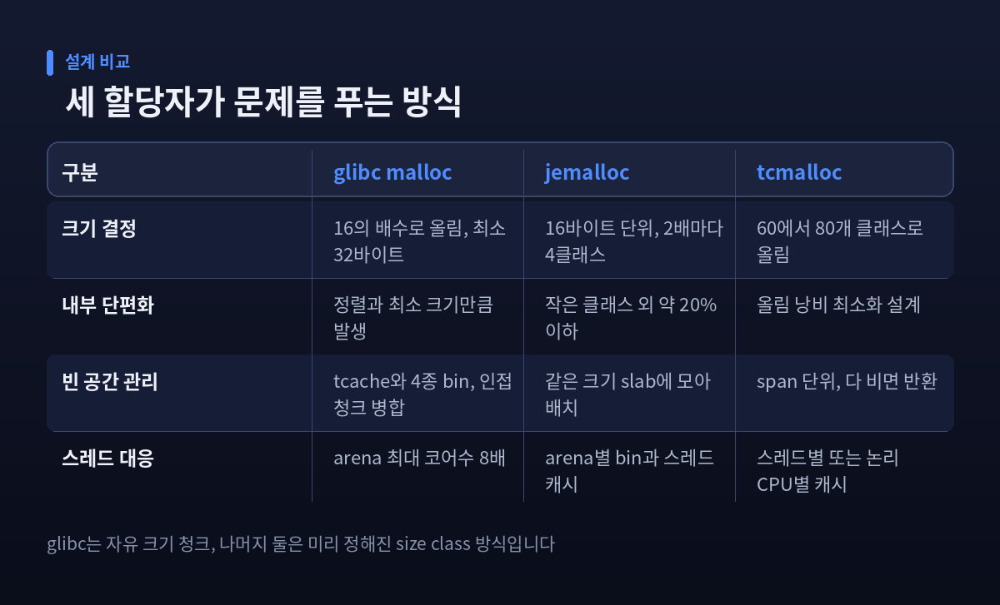

메모리 할당자 malloc 원리 — 힙은 어떻게 쪼개지고 왜 단편화될까
malloc(24)를 부르면 정확히 24바이트가 나올 것 같지만, 실제로는 32바이트짜리 덩어리가 잡힙니다. 이번 글에서는 메모리 할당자가 운영체제에서 힙을 얻어와 잘라 쓰는 과정과, 그 과정에서 단편화가 생기는 이유를 정리해 보겠습니다. 기준은 리눅스에서 가장 널리 쓰이는 glibc의 malloc(ptmalloc2), 64비트 환경입니다.
힙은 어디서 오는가 — brk와 mmap
malloc은 마법사가 아닙니다. 자기도 커널에서 메모리를 받아 와야 합니다. 통로는 둘입니다.
하나는 brk/sbrk입니다. 프로세스의 힙 세그먼트 끝 경계(program break)를 밀어 올려 공간을 넓히는 방식입니다. 초기 유닉스에서는 이것이 힙을 늘리는 유일한 방법이었습니다.
다른 하나는 mmap입니다. glibc malloc은 요청 크기가 M_MMAP_THRESHOLD 이상이고 기존 빈 공간으로 감당이 안 되면, 경계를 밀지 않고 아예 독립된 익명 매핑을 새로 만듭니다. 기본 임계값은 128 KiB(131072바이트)입니다.
둘의 성격은 정반대입니다. mmap으로 얻은 블록은 free할 때 언제든 독립적으로 OS에 반환됩니다. 반면 brk로 늘린 힙은 맨 꼭대기에서 해제된 경우에만 줄일 수 있습니다. 대신 mmap은 페이지 정렬 때문에 낭비가 생기고, 커널이 매번 메모리를 0으로 채워야 해서 비쌉니다. 이 손익 계산의 타협점이 128 KiB인 셈입니다.
이 임계값은 고정이 아닙니다. 현재 임계값보다 크고 상한 이하인 블록이 free될 때마다 임계값이 그 크기까지 올라갑니다. 64비트에서 상한은 32 MiB입니다. 그리고 임계값이 바뀌면 힙을 줄이는 트림 임계값도 자동으로 그 두 배가 됩니다.
청크 — 8바이트 머리말이 만드는 32바이트 바닥
할당자가 힙을 잘라 관리하는 단위를 청크(chunk)라고 부릅니다. 청크에는 사용자 데이터만 들어 있지 않습니다. 앞쪽에 관리용 머리말이 붙습니다.
머리말은 두 칸입니다. prev_size는 앞 청크가 비어 있을 때 그 크기를 담습니다. mchunk_size는 현재 청크의 크기를 담는데, 크기가 늘 16의 배수라 하위 3비트가 남습니다. 할당자는 이 세 비트를 플래그로 씁니다. 앞 청크가 사용 중인지(PREV_INUSE), 이 청크가 mmap으로 얻어진 것인지(IS_MMAPPED), 메인 arena 소속이 아닌지(NON_MAIN_ARENA)를 표시합니다. 한 바이트도 놀리지 않는 설계입니다.
64비트에서 청크 크기 계산은 이렇습니다.
청크 크기 = (요청 크기 + 8 + 15) & ~15, 단 최소 32바이트
SIZE_SZ가 8바이트, 정렬 단위가 16바이트, 최소 청크가 32바이트이기 때문입니다. 머리말이 두 칸인데 8바이트만 더하는 이유가 재미있습니다. prev_size 자리는 앞 청크가 살아 있는 동안 쓰이지 않으므로, 다음 청크의 prev_size 칸을 미리 빌려 쓰는 것입니다.
결과는 계단입니다. 1바이트를 요청하든 24바이트를 요청하든 32바이트 청크가 나옵니다. 25바이트를 요청하면 48바이트로 뛰어오릅니다. tcache 설계자인 DJ Delorie는 이 점을 이렇게 경고했습니다. "17바이트 요청을 대량으로 하지 마십시오. 건당 15바이트, 거의 메모리의 절반을 버리게 됩니다."

다섯 개의 서랍 — tcache부터 large bin까지
해제된 청크를 그냥 버리면 다음 요청 때 또 커널을 불러야 합니다. 그래서 할당자는 free된 청크를 크기별 목록에 모아 둡니다. 이 목록을 bin이라 부르며, glibc에는 성격이 다른 다섯 종류가 있습니다.
tcache는 스레드마다 따로 두는 캐시입니다. 스레드 로컬 저장소에 있어 락도 원자 연산도 필요 없습니다. 스레드당 64개 목록, 목록마다 최대 7개 청크를 담습니다. 64비트에서 처리 가능한 요청 크기는 최대 1032바이트이고, 기본 설정에서 스레드 하나가 여기에 묶어 둘 수 있는 메모리는 대략 236 KB 수준입니다.
fastbin은 작은 청크를 인접 빈 공간과 합치지 않고 그대로 쌓아 두는 곳입니다. 64비트에서 10개 목록이 32~160바이트 청크를 담당하고, 기본 컷오프는 128바이트 선입니다. 같은 크기를 반복해서 잡고 놓는 코드에는 대단히 빠릅니다만, 병합을 미루는 만큼 단편화가 늘 수 있습니다.
unsorted bin은 단 하나뿐인 임시 서랍입니다. 해제된 청크와 분할하고 남은 조각이 일단 여기로 옵니다. 다음 malloc이 훑다가 크기가 맞으면 곧바로 재사용하고, 아니면 제 자리로 분류해 넣습니다. 한 번의 재사용 기회를 주는 완충 장치입니다.
small bin은 62개이며 목록 하나가 정확히 한 가지 크기만 담습니다. 64비트에서 간격은 16바이트, 담당 구간은 1024바이트 미만입니다. large bin은 63개로 1024바이트 이상을 맡습니다. 여기는 한 목록이 크기 구간을 담당하므로 내림차순 정렬을 유지합니다. 크기가 다른 묶음끼리는 별도 포인터로 이어 두어, 긴 목록을 처음부터 훑지 않고 건너뛰며 찾습니다.
찾는 순서는 tcache → fastbin → unsorted bin → small/large bin입니다. 여기서도 못 찾으면 힙 맨 끝의 top chunk를 잘라 쓰고, 그마저 모자라면 그제야 커널을 부릅니다.

쪼개고 붙이기 — splitting과 coalescing
맞는 크기가 없으면 큰 청크를 쪼갭니다. 다만 아무렇게나 쪼개지 않습니다. 남는 조각이 최소 청크 크기인 32바이트 이상일 때만 분할하고, 그보다 작으면 쪼개지 않고 통째로 내줍니다. 이 순간 요청과 청크의 차이는 그대로 낭비가 됩니다.
반대 방향이 병합입니다. 원칙은 단순합니다 — 인접한 두 빈 청크는 공존할 수 없습니다. small bin과 large bin의 청크는 free되는 즉시 양옆을 확인해 합쳐집니다.
다만 fastbin은 예외입니다. 속도를 위해 병합을 미뤄 둡니다. 그래서 할당자는 일정 조건에서 fastbin을 한꺼번에 비워 인접 청크와 합치는 작업을 수행합니다. fastbin으로 감당 못 할 큰 요청이 들어올 때, 64 KB를 넘는 청크가 해제될 때가 그 시점입니다.
분할하고 남은 조각 중 가장 최근 것은 따로 기억해 둡니다. 다음에 들어오는 작은 요청에 이 조각을 우선 쓰면, 비슷한 시기에 만들어진 데이터가 메모리에서도 가까이 모입니다. 캐시 적중률을 생각한 배려입니다.
내부 단편화와 외부 단편화
단편화는 한 종류가 아닙니다. 성격이 아주 다른 둘을 같은 말로 부르고 있을 뿐입니다.
내부 단편화는 받은 블록 안쪽에서 남는 공간입니다. 17바이트를 요청했는데 32바이트를 받았다면 15바이트가 블록 안에서 놀고 있습니다. 정렬과 최소 크기 규칙이 있는 한 이 손실은 구조적으로 피할 수 없습니다.
외부 단편화는 블록 바깥의 문제입니다. 필요한 총량은 충분히 남아 있는데, 조각조각 흩어져 있어 연속된 덩어리를 만들 수 없는 상태입니다. 창고에 빈 자리는 많은데 긴 책상 하나 들일 자리가 없는 상황과 같습니다.
고전 운영체제 교재에는 50% 규칙이라는 경험칙이 나옵니다. N개 블록을 할당하면 단편화만으로 0.5N개가 손실되고, 결국 메모리의 3분의 1이 못 쓰는 상태가 된다는 계산입니다.
단편화의 진짜 원인은 무엇일까요. 1995년 Wilson 등의 고전적 서베이는 이를 "고립된 죽음"이라고 불렀습니다. 어떤 객체가 혼자 사라지는데 양옆 이웃은 아직 살아 있을 때, 합쳐지지 못하는 빈 구멍이 남습니다. 어떤 객체를 어디에 놓았고 언제 죽는가의 문제라는 뜻입니다.
어디에 놓을 것인가 — first-fit과 best-fit
빈 자리가 여럿일 때 어디에 넣을지가 배치 정책입니다. 고전적으로 셋이 있습니다. 처음부터 훑어 충분히 큰 첫 구멍을 쓰는 first-fit, 딱 맞는 가장 작은 구멍을 고르는 best-fit, 가장 큰 구멍을 쓰는 worst-fit입니다.
교과서는 오랫동안 best-fit을 경계했습니다. 딱 맞게 쓰다 보면 쓸 수 없을 만큼 작은 자투리가 목록 앞쪽에 쌓인다는 이유였습니다.
그런데 실측은 다른 이야기를 합니다. Johnstone과 Wilson이 1998년 ISMM에 발표한 연구는 실제 C/C++ 프로그램 8개를 대상으로 여러 할당자를 측정했습니다. 결론은 이랬습니다. 헤더와 정렬 같은 구현 오버헤드를 걷어내면, 여러 전통적 할당자가 거의 0에 가까운 단편화를 보인다. best fit과 주소순 first fit은 모두 좋은 성적을 냈고, 오히려 first fit LIFO와 next fit LIFO가 특정 프로그램 하나에서 파멸적으로 나빴습니다.
두 사람의 결론은 단호합니다. 대부분의 프로그램에 대해 좋은 정책은 이미 손에 있고, 진짜 과제는 구현의 효율성이라는 것입니다. 오늘날 할당자들이 정책 논쟁보다 캐시와 락 회피에 공을 들이는 이유가 여기에 있습니다.
스레드가 늘어나면 — arena와 tcache
여러 스레드가 동시에 malloc을 부르면 내부 자료구조가 망가집니다. 그래서 락이 필요합니다. 그런데 이 락은 CPU 캐시 사이, 때로는 물리 CPU 사이를 동기화해야 해서 할당 자체보다 비쌀 때가 많습니다.
glibc의 답은 arena를 여러 개 두는 것이었습니다. arena는 힙 하나 이상과 그것을 추적하는 관리 구조의 묶음입니다. 스레드가 쓰려는 arena가 잠겨 있으면 다른 arena로 옮기거나 새로 만듭니다. 상한은 64비트에서 코어 수의 8배입니다. 쿼드코어라면 최대 32개가 생길 수 있습니다.
메인 arena는 brk로 힙을 늘리고, 스레드 arena는 mmap으로 힙을 받습니다. 스레드 arena의 힙이 기본 64 MB를 넘으면 새 힙을 하나 더 붙입니다.
여기에 대가가 따릅니다. 각 요청이 전체 힙이 아니라 자기 arena 안에서만 맞는 조각을 찾기 때문에, arena가 늘수록 단편화도 늘어납니다. 락 경합과 메모리 사용량을 맞바꾼 셈입니다.
그 다음 수가 tcache였습니다. 예전에는 아무리 작은 할당도 arena 락을 거쳐야 했습니다. 지금은 스레드 로컬 저장소에 놓인 tcache가 락을 아예 건드리지 않고 대부분의 작은 요청을 처리합니다. 스레드를 하나도 만들지 않는 프로그램조차 멀티스레드처럼 취급받는 환경에서, 이 차이는 작지 않습니다.
jemalloc과 tcmalloc은 다르게 접근합니다
glibc가 자유로운 크기의 청크를 목록으로 관리한다면, jemalloc과 tcmalloc은 크기를 미리 정해진 계단(size class)에 밀어 넣는 쪽을 택했습니다.
jemalloc은 64비트에서 16바이트를 기본 단위로 삼고, 크기가 두 배가 될 때마다 size class를 네 개씩 배치합니다. 이 간격 설계 덕에 가장 작은 몇 개 클래스를 빼면 내부 단편화가 약 20% 이하로 묶입니다. 상한이 보장된다는 점이 중요합니다.
tcmalloc은 구조를 세 층으로 나눕니다. 대부분의 할당을 락 없이 처리하는 front-end, 이를 채워 주는 middle-end, OS와 이야기하는 back-end입니다. 작은 객체는 60~80개 수준의 size class 중 하나로 올림됩니다. 12바이트 요청은 16바이트 클래스가 받습니다.
tcmalloc의 front-end는 처음엔 스레드별 캐시였지만, 스레드 수에 비례해 메모리가 부푸는 문제 때문에 논리 CPU별 캐시로 옮겨 갔습니다. 락과 원자 연산 없이 이것이 가능한 이유는 restartable sequence라는 커널 기능 덕분입니다.
페이지 크기 선택도 흥미롭습니다. tcmalloc은 4 KiB부터 256 KiB까지 고를 수 있는데, 문서의 설명이 직관적입니다. 4 KiB 페이지는 512바이트 객체 여덟 개를 담고 32 KiB 페이지는 예순네 개를 담는데, 예순네 개가 동시에 비어 있을 확률이 여덟 개보다 훨씬 낮습니다. 작은 페이지가 더 잘 반환된다는 뜻입니다.

돌려주지 않는 이유 — trim의 벽
많이 받는 질문이 있습니다. free를 잔뜩 했는데 왜 프로세스 메모리 사용량이 그대로일까요.
답은 간단합니다. 대부분의 경우 free()는 OS가 아니라 할당자에게 메모리를 돌려줍니다. 매번 시스템 콜을 부르면 느리니 풀에 쥐고 있는 것입니다.
그럼 언제 돌려줄까요. 힙 꼭대기의 연속된 빈 공간이 트림 임계값에 도달했을 때입니다. 기본값은 128 KiB이고, -1로 설정하면 반환을 완전히 끌 수도 있습니다.
문제는 '꼭대기'라는 조건입니다. 100 MB를 해제했더라도 그 위에 오래 사는 작은 할당 하나만 남아 있으면, 그 100 MB 전체가 프로세스 메모리에 묶여 있습니다. 벽돌 한 장이 창고 문을 막고 있는 셈입니다.
그래서 실무 조언이 나옵니다. 아주 큰 할당과 작은 할당이 섞인 프로그램이라면 mmap 임계값을 '아주 큰' 크기 바로 아래로 낮춰 보십시오. 큰 할당이 mmap으로 빠지면 free할 때 곧바로 OS로 돌아가고, 힙 한가운데 남아 작은 청크들의 병합을 막는 일도 없어집니다. 필요하다면 malloc_trim()을 직접 부르는 방법도 있습니다만, 애플리케이션이 명시적으로 호출해야 합니다.
물론 이런 튜닝이 만능은 아닙니다. 값 하나를 바꾸면 다른 쪽에서 시스템 콜이 늘거나 캐시 효율이 떨어집니다. 수치를 손대기 전에 먼저 측정해야 하는 이유입니다.
정리하면 이렇습니다.
메모리 할당자는 커널에서 받은 큰 땅을 잘게 나눠 빌려주는 중개인입니다. 빠르게 빌려주려고 캐시를 두고, 낭비를 줄이려고 병합을 하고, 경합을 피하려고 영역을 나눕니다. 단편화는 이 세 가지 목표가 서로 당기는 힘 사이에서 필연적으로 흘러나오는 부산물입니다.
그래서 단편화를 "없애야 할 버그"로 보면 길을 잃습니다. 1998년의 실측이 알려준 것은 오히려 반대였습니다 — 좋은 정책은 이미 나와 있고, 남은 문제는 얼마나 싸게 구현하느냐였습니다.
malloc(24)가 왜 32바이트를 잡는지 이제 아시겠는지요. 8바이트는 머리말이고, 나머지는 16의 배수로 올려야 했기 때문입니다. 그 사소해 보이는 8바이트와 16바이트가, 서버의 메모리 그래프가 왜 그렇게 생겼는지를 설명하는 출발점입니다.